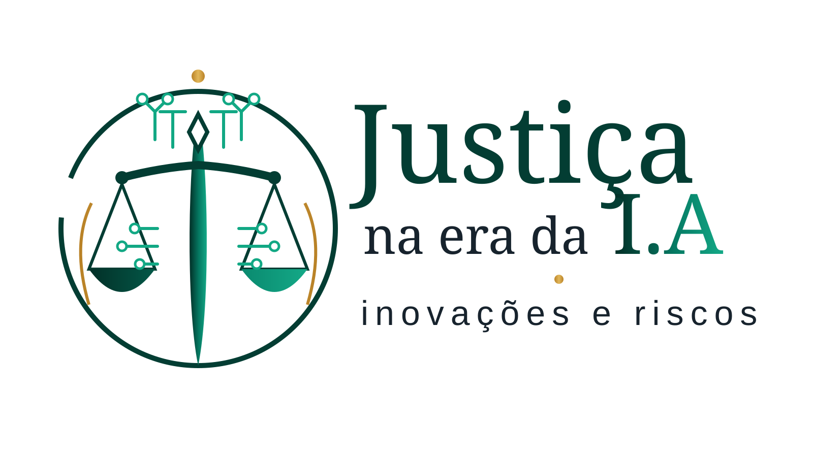

← Quando o Desenho Fala
Mais dois desenhos falam
Duas imagens do acervo recente são lidas como capítulos distintos da genealogia visual da Jus 9 Tecnologia Jurídica. A leitura não substitui a intenção do Fundador: documenta o que os elementos comunicam e como dialogam com Direito, tecnologia, risco, esperança e continuidade.

Justiça na era da I.A — inovações e riscos
A composição aproxima balança e circuitos. A balança conserva a tradição jurídica; as trilhas eletrônicas atravessam a estrutura e tornam visível a passagem para sistemas computacionais. O verde remete à paleta institucional e à ideia de desenvolvimento responsável; o dourado marca valor, memória e prudência.
O que o desenho fala
Inovar não elimina o peso da responsabilidade. Quanto maior a capacidade tecnológica, maior precisa ser a atenção aos riscos, à governança, à explicabilidade e à presença humana.
Forma e palavra
“Justiça” permanece dominante. “I.A” recebe destaque cromático, mas não ocupa sozinha o título. “inovações e riscos” funciona como contraponto: toda promessa tecnológica é apresentada junto de sua necessidade de avaliação crítica.
Proveniência
Leitura baseada na matriz visual fornecida por Clovis Mariano da Costa. Para publicação web foi preparada uma versão vetorial editorial que preserva a linguagem da imagem anexada e evita ampliação destrutiva de pixels.
✦
Unicórnio alado • Justiça • Jus 9
Imagem-matriz preservada no acervo original; publicação binária em alta resolução deve ser feita pelo pipeline técnico/Codex conforme pedido de programação registrado.
O unicórnio alado da Jus 9
O cavalo branco alado reúne movimento e elevação; o unicórnio acrescenta singularidade e busca do impossível. As asas douradas sugerem que a tecnologia pode ampliar alcance sem abandonar direção. A balança coloca essa potência sob o signo da Justiça. Os circuitos no fundo fazem a passagem explícita para o ambiente digital.
A estrela
A estrela superior deve permanecer com nove pontas, padrão visual obrigatório da Jus 9 Tecnologia Jurídica. Ela funciona como orientação e unidade acima da potência representada pelo animal.
O que o desenho fala
Potência sem direção pode se perder; imaginação com Justiça, memória e governança pode ganhar asas.
O escudo JUS 9
O nome no escudo ancora a cena fantástica em uma identidade institucional. A fantasia não pretende substituir o Direito: comunica, em linguagem simbólica, ambição de futuro, criatividade e responsabilidade.
Proveniência e próxima etapa técnica
A matriz em alta resolução foi fornecida nesta conversa. Para não degradá-la, o site registra desde já a leitura editorial e deixa a publicação do binário original para o fluxo técnico descrito ao Codex, com preservação de resolução, proporção, acessibilidade e histórico.
Charlie Delta da Costa — leitura simbólico-operacional, sob governança humana.